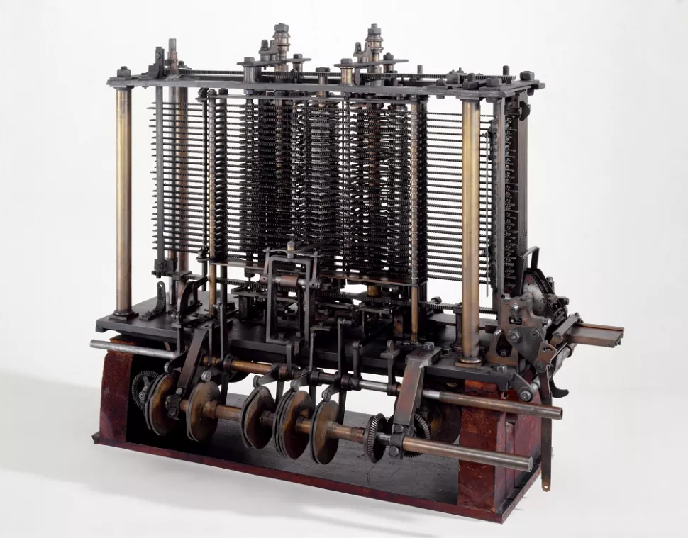

Main Page
1.The invention of computer

Blog Info
History of Computers: A Brief Timeline
Author:Kim Ann Zimmermann
Date:September 07, 2017
History of Computers: A Brief Timeline
Content
Today, we carry more computing power on our smartphones than was available in early models.The computer was born not for entertainment or email but out of a need to solve a serious number-crunching crisis.
By 1880, the U.S. population had grown so large that it took more than seven years to tabulate the U.S. Census results. The government sought a faster way to get the job done, giving rise to punch-card based computers that took up entire rooms.
The following brief history of computing is a timeline of how computers evolved from their humble beginnings to the machines of today that surf the Internet, play games and stream multimedia in addition to crunching numbers.
| Date |
Milestone |
Location |
| 1880 |
The computer was born |
England |
| 1945 |
The second Genration was updated |
United State |
| 1965 |
The Third Genration was updated |
United State |
2.The Secrets of How IBM Maintains AI Leadership
Blog Info
The Secrets of How IBM Maintains AI Leadership
Author:Rob Enderle
Date:Jul 13, 2020
The Secrets of How IBM Maintains AI Leadership
Content
IBM is chasing two of the three technology areas that I think will change the world as we know it over the next two decades. Granted, we are currently experiencing a level of unprecedented change, thanks to the pandemic, and it is dramatically accelerating at least one of these efforts.The three technology changes that I'm watching are robotics (including things like autonomous cars), AI computing, and quantum computing.
IBM's focus has been on the AI (Watson), and quantum computing efforts. I got an update on their AI efforts last week, and they have moved the ball a lot over the last few months.IBM began their AI push early on, and they dominate enterprise-class AI with their Watson offering.
Initially targeted at the healthcare segment and focused on making a difficult diagnosis, I still recall their first public validation test. They took a problem that had stumped doctors for years regarding a woman who had strange symptoms and an undiagnosed painful disease.
In 15 minutes, the system identified both the cause and the likely cure for her problem.